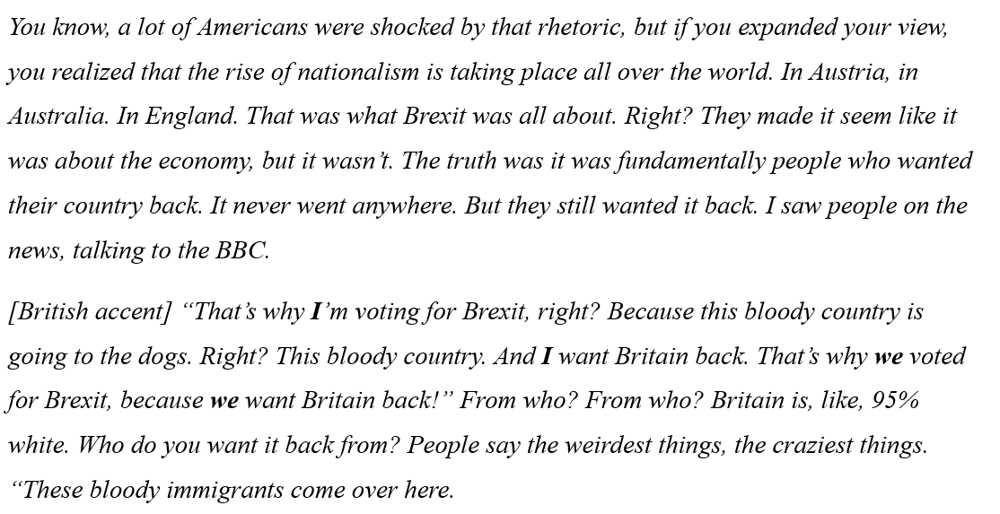
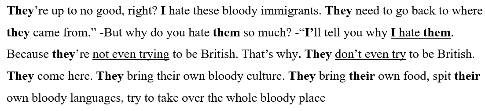
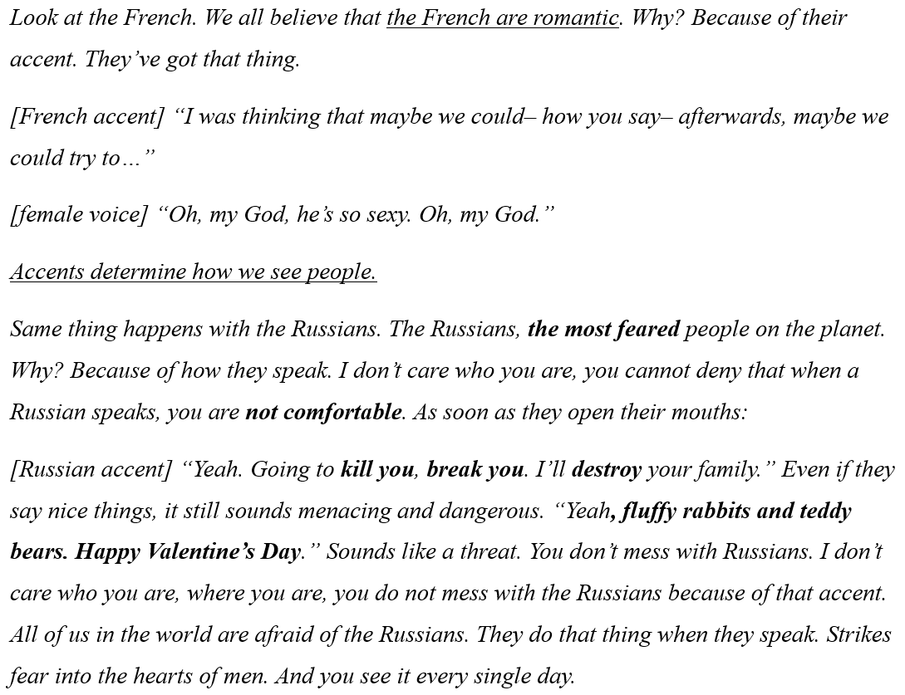

Abstract
A Fairclough-style critical discourse analysis of Trevor Noah’s stand-up special Afraid of the Dark - how pronouns, word choice and formulation construct immigration and racism, and how humour can expose and soften political polarisation.
Issues regarding immigration have been a focal point of discussion within politics for decades. These issues do not only impact politics, as they trickle down to society and spread through media, causing social problems within different social groups. The migration of people across borders has an impact on residents of those countries, resulting in social interactions that shape social, political, and economic changes within a society. Politicians have been using these issues to gain or remain in power by manipulating language in order to create a division between different social groups (Geary et al., 2020). This paper will illustrate how language use can assign blame and how that creates and perpetuates divisions between different social groups. These separations are related to identity and membership categorisation, as these are constructed based on how people view themselves and others (Benwell & Stokoe, 2006). Identity is a social concept and these are negotiated and constructed by the members of society to maintain social order (Hester & Eglin, 1997). However, this social order can be disrupted by how language can be used to spread, sustain, or eradicate fear amongst membership categories. Language use in any form is a way of communication, but how that language is intentionally used to spread ideologies about people in a social context can have detrimental outcomes for minority groups in society (Van Dijk, 1999). The text used in this paper is from Trevor Noah’s Netflix show Afraid of the Dark. Throughout the show he uses comedy as a means to address contentious and polarising topics such as racism. He addresses the issues from both perspectives to spread understanding about racial issues surrounding immigration. He uses language to visualise stereotypes, triggering concepts which are stored in our long-term memory (Hart, 2011).
The aim of this essay is to investigate the manner in which discourse of immigration and racism is constructed, interpreted, and made visible by Trevor Noah. Two extracts from his show have been selected for analysis. The Critical Discourse Analysis (CDA) will be conducted through Fairclough’s framework, to explore the broader societal and contextual issues, and how these attitudes shape the perception of immigrants in society. The following sections include the social context, text introduction, Fairclough’s framework, text analysis, and discussion.
The social aspect of immigration, in any given country, the prevailing social attitudes towards immigration are formed and sustained largely by the attitudes and stance of the mainstream media in that country (Van Dijk, 2015). However, in recent years, the way people watch or read the news has changed due to social media. People can now receive personalised news or media in a political context on their phones. This becomes a gateway to social control by those in power, as discourse functions as a tool to spread ideologies (Fairclough, 2013). The relationship between discourse and society requires mutual effort as it influences change in social structures. This became evident in the United States when Donald Trump became president and spread extreme ideologies regarding immigration, causing divisions in the country. These ideologies caused a rise in nationalism, which spread to other countries (Geary et al., 2020). CDA illustrates how social-power abuse and inequality are a product of the way language is reproduced, enacted, normalised, and resisted in social and political contexts (Van Dijk, 2015).
The spoken text is selected from Trevor Noah’s stand-up Afraid of the Dark. In this monologue, Trevor Noah raises the issues regarding immigration and extreme ideologies expressed by people in society towards immigrants. These ideologies are spread by politicians in power who are contributing to social issues. The topic of race remains controversial as racism is often denied or sugar-coated under political terms (Van Dijk, 1999). Trevor Noah is using humour to explain the layers of these political concepts and their impacts on people in society. Trevor Noah is a South African comedian who has had his own television program The Daily Show for seven years in the United States. The show is related to the news and addresses political matters on a global scale. His shows, stand-ups, and books are all related to societal issues regarding identity, racism, immigration, and social relationships. The two extracts selected are from different parts of the show. Both extracts signify different aspects of how majority groups in society create and sustain their biases regarding immigrants. The way this text was produced relies on the way Trevor Noah interprets the issues based on his personal experiences and background regarding racism (Fairclough, 2013).
The Critical Discourse Analysis (CDA) framework by Fairclough (2013), suggests the analysis of written and spoken texts is undertaken by deconstructing a text and analysing the different layers. These layers become visible when looking at vocabulary, grammar, and textual structures (Fairclough, 2013). The words used in texts and how they are put together can impact how they are perceived and interpreted by people. As a result, these words have significant meaning to people from one particular group as word choice can create relationships between people or drive people apart (Fairclough, 2013). The use of euphemism and metaphor allows the meanings of words to be reduced or intensified depending on the purpose. For example, politicians are more likely to use metaphors to evoke emotions for rhetorical effect and to persuade the audience (Charteris-Black, 2014). These interpretations and the way language is used have an impact on the power relations between different social groups with different identities (e.g., gender, ethnicity, occupation, age). Depending on which group people identify with and how these groups are portrayed by those in power (i.e., media, politicians), results in people constantly defending their position in society. This results in a social struggle which has a long-term impact on identities, social relationships, and ideologies in society (Fairclough, 2013). Based on Fairclough’s methodology, the analysis of the selected text will analyse the use of grammar, lexical, and textual items in the extracts chosen from Trevor Noah’s stand-up.
Grammar & Textual Items: The Use of Pronouns & Explicitness/Formulation
In this part of the stand-up, Trevor Noah is highlighting the ideologies expressed in the media by the majority groups in British society. These ideologies have different meanings for different social groups. In the example below, Trevor Noah shows how the British majority group is concerned with wanting their country back, showing the perceptions of people wanting change in government policies regarding immigration. Trevor Noah is using formulation by rewording and giving examples (as presented on the BBC) to explain and check the understanding of the audience. The audience responds with laughter when he gives an account, ‘The truth was fundamentally people wanting their country back. It never went anywhere.’, laughter shows agreement to the account given. Then he further explains how racism underpins political and economic issues.


Fairclough (2013) suggests that grammatical structures which have personal pronouns are tied in with relationships of power and solidarity as used in the segment above. The use of the first person is to create personal appeal, That’s why I voted for Brexit, I want Britain back, I’ll tell you why I hate them. Additionally, by using the same sentence structures with the inclusive pronoun we, makes clear how language is manipulated to make it sound like he is speaking on behalf of all British people; That’s why we voted for Brexit, because we want Britain back. Here, Trevor is emphasising how the use of we makes an implicit authority claim that people can speak on behalf of others (Fairclough, 2013). The use of the opposing pronouns they and them shows a clear separation from we in the following utterances:
They’re up to no good, They need to go back to where they came from, they’re not even trying to be British, They don’t even try to be British, They come here, They bring their own bloody culture, They bring their own food, spit their own bloody languages
This type of representation perpetuates prejudice against immigrants by assigning blame using pronouns to create polarisation between minority and majority groups in society (Spriggs, 2020). In a societal context, assigning blame is easily done when one social group can disassociate themselves (i.e., the self) from other groups because they do not identify as that group due to differences (e.g., age, race, religion, gender). This causes the social groups to defend their own morals and blame others who cannot live up to those standards (Spriggs, 2020). Trevor Noah expresses his concern about this topic as he experienced racism in South Africa when he was raised there during apartheid (Noah, 2016).
Lexical & Textual Items: Use of Words & Formulation
The way immigrants are portrayed in the media as shown in extract 1, spreads the ideology of racism hidden in fear. Spreading fear is a form of power to that exerts a certain degree of control in society. In extract 2, Trevor Noah continues his theme, focussing on how people view immigrants based on their accents, as accents have a certain connotation and they create judgment in how people view others. He unfolds these views by explaining the different layers of categorisation which happen in society when giving labels to immigrants depending on their accents (i.e., intelligence). Trevor implicitly uses the idea of how people generally fear the unknown, as people fear things they do not understand. He links that idea to immigrants, explaining that people do not fear immigrants who look and sound similar to the majority groups, but rather the ones who are different (e.g., appearances and accents). He is again using formulation to clarify his ideas for the audience’s understanding. In this type of storytelling, Trevor uses the French and Russian accents to make it clear to the audience how the perceptions of these social identities are created and constructed by the members of society. For the French, he only uses one sentence in the French accent to get his point across about how the French are generally viewed by the public. The audience responds to this with laughter, showing agreement.

He then moves on to the Russian accent using opposite lexical items illustrating presuppositions which exist about Russians in society, revealing the power an accent can have over an individual (Van Dijk, 2015). Using negative lexical items such as, kill you, break you, destroy your family, constructs negative connotations, triggering a range of schemata evoking negative ideologies of ‘mafias’, ‘murderers’, and ‘criminals’. For example, the words kill, break and destroy are subconsciously associated with other related words (i.e., synonyms) in the lexicon such as assassinate, execute, murder, damage, or end. These types of words arouse fear based on the background knowledge people have of Russians represented in the US and global media. Trevor then shifts and uses opposing positive lexical items such as fluffy rabbits, teddy bears, Happy Valentine’s Day, to show contrast. Additionally, putting words together with the same semantic value, merges schemas, and creates positive pragmatic ideologies related to ‘children and love’. The contrast of going from negative to immediately positive words should arouse positive emotions (Charteris-Black, 2014). However, the use of the Russian accent does not alter the emotion of fear. The differences in these negative and positive meanings selected, shows the expressive value of words in persuading the audience (Fairclough, 2013) by shifting between comparison to categorisation of different types of immigrants (i.e., French and Russian). The intended purpose of this segment is to exemplify why people fear or think a certain way about immigrants with different nationalities. However, those fears are based on ideologies and labels created and co-constructed by the members of society (based on racism) which do not represent the truth about individuals.
Through a sociological lens, the discourse of immigration and racism is constructed, viewing how immigrants are seen and represented in the media. This extremely sensitive topic is and will continue to be highly relevant, as migration happens due to many different reasons. People can opt to move for educational or work purposes, contributing to a country’s economy. However, some people may have little choice because they have to flee their countries, seeking refuge, due to war or environmental issues (e.g., earthquakes, tsunamis). Irrespective of the motivation for migration, people wish to be included in society as humans are social beings. The exclusion of immigrants or minority groups within society is influenced by the way they are perceived, based on how they look, sound, and dress, as that deviates from the normative expectations of the members of that society. This may lead to treating people differently based on differences in customs. As with identity, categorisation, and discourse, racism is also socially constructed and maintained by the members of society. The imagery and mental representations people have are stored in their long-term memory about certain cultures as they are grounded in their ideologies (Hart, 2011). This results in inequality as it influences beliefs and behaviours towards certain social groups in society, allowing negative concepts to become normalised. The concept of power is seen as control which can be reflected through text and talk entering people’s minds to create assumptions (Van Dijk, 2015).
The stand-up by Trevor Noah gives transparency to the way racism is maintained and hidden under political agendas. Showcasing that these assumptions can be eradicated by deconstructing normalised beliefs, allows for the reconstruction of new ideologies (Locke, 2004).
This analysis shows how the interpretation of language, whether that is written or spoken text, can be interpreted and used to change world views regarding immigrants, immigration policies, and racism. In order to analyse the text, frameworks by Fairclough (i.e., grammatical, lexical and textual structures) were taken into consideration. The sociological lens helps us to understand how people in society are influenced by other members of society or media to think and co-construct ideologies regarding immigration. These implications create polarised views on immigrants and results in separating and driving people apart. However, shedding light on these issues by explaining the layers within these constructions, the way Trevor Noah has done, can create transparency and understanding to re-establish relationships within different social groups in society.
Benwell, B., & Stokoe, E. (2006). Discourse and Identity. Edinburgh University Press. https://doi.org/10.1515/9780748626533
Charteris-Black, J. (2014). Analysing Political Speeches: Rhetoric, Discourse and Metaphor. Basingstoke: Palgrave Macmillan.
Fairclough, N. (2013). Language and Power. Taylor and Francis. https://doi.org/10.4324/9781315838250
Geary, D., Schofield, C., & Sutton, J. (Eds.). (2020). Global white nationalism: From apartheid to Trump (1st ed.). Manchester University Press. http://www.jstor.org/stable/j.ctv1595mjd
Hart, C. (2011). Force-interactive patterns in immigration discourse: A Cognitive Linguistic approach to CDA. Discourse & Society, 22(3), 269–286. https://doi.org/10.1177/0957926510395440
Hester, S., & Eglin, P. (1997). Culture in action: Studies in membership categorization analysis. Washington, DC: International Institute for Ethnomethodology & Conversation Analysis and University Press of America.
Locke, T. (2004). Critical discourse analysis. Continuum.
Noah, T. (2016). Born a Crime. John Murray.
Spriggs, M. (2020). A Story of 'Us Vs. Them': A Critical Discourse Analysis of Blame Tactics in Political Campaign Speeches. ProQuest Dissertations Publishing.
Van Dijk, T. A. (1999). Discourse and Racism. Discourse & Society, 10(2), 147–148. https://doi.org/10.1177/0957926599010002001
Van Dijk, T. (2015). Critical Discourse Analysis. In D. Tannen, H. E. Hamilton, & D. Schiffrin (Eds.), The handbook of discourse analysis (2nd ed., pp. 466–485). John Wiley & Sons.